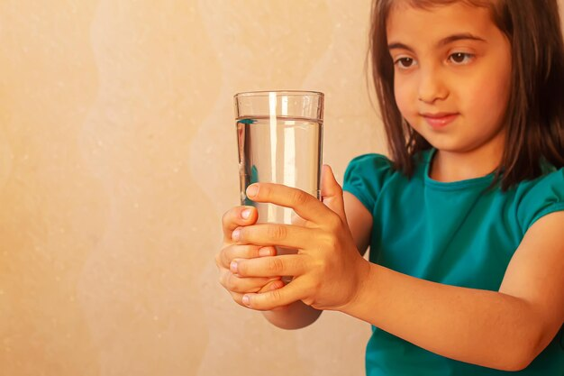
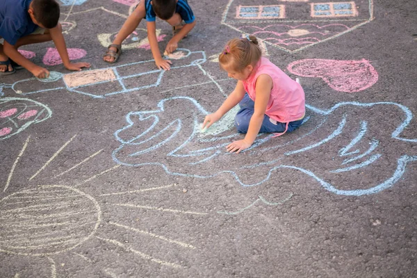
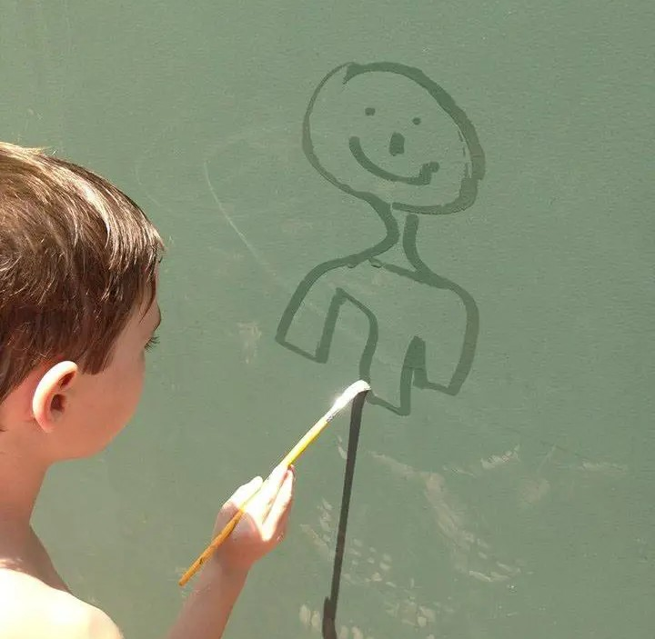
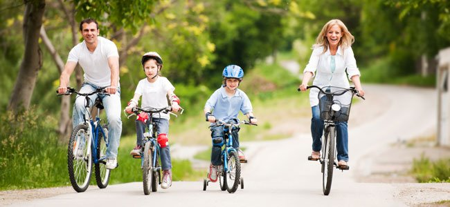
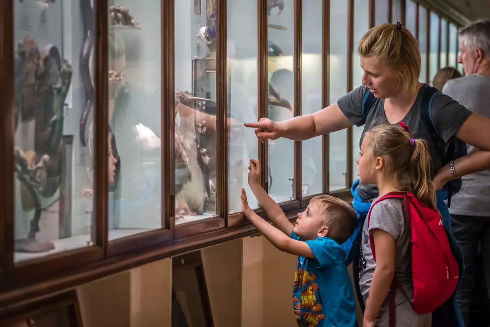
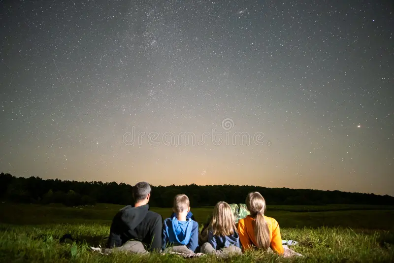

1. Corrida com copo cheio de água: Faça uma corrida com copos cheios de água.
Exemplos:
Encha um copo de água e aposte uma corrida, quem chegar primeiro no final com o copo mais cheio, ganha.
2. Piquenique com Jogos: Providencie um piquenique em família e com jogos.
Exemplos:
Faça comidas para fazer o piquenique e leve jogos para poderem se divertir, como, bola de vôlei, uno, bola de futebol, etc.

3. Giz no chão: Desenhe com giz.
Exemplos:
Faça atividades com giz na rua, como, amarelinha, competição de desenho, pistas de corridas, etc.
4. Pintura com água em muros ou calçadas: Faça desenhos com água pela rua.
Exemplos:
Pegue uma garrafa e preencha com água, na ponta da garrafa bote uma esponja, depois comece a fazer desenhos nas parede com a ponta da garrafa .
5. Construção com elementos da natureza: Construa coisas com o que a natureza te der.
Exemplos:
Pegue gravetos, folhas, areia, tudo que for da natureza, depois faça brinquedos com o que você achou.

6. Bingo da natureza: Faça um bingo com coisas da natureza.
Exemplos:
Escreva coisas aleatórias que podem ser encontradas na natureza, depois entregue para seus familiares, eles precisam pegar cada objeto que está na lista, quem trazer todos os objetos primeiro, ganha.

7. Caminhadas ou trilhas leves em família: Faça caminhadas e trilhas em família.
Exemplos:
Planeja uma hora e dia específico para fazer caminhada ou trilha com sua família, podendo ter uma vida mais saudável e ter mais momentos juntos.

8. Passeio de bicicleta em ciclovias: Fazer passeio de bicicletas
Exemplos:
Ache um horário para fazer um passeio de bicicleta pela cidade com a família, assim podendo se divertir e criar memórias.
9. Visitar lugares: Fazer visitas nos lugares com a família.
Exemplos:
Em finais de semanas visite praças, parques ecológicos, museus, etc.
10. Observação de estrelas durante a noite: Observar o céu em uma noite estrelada.
Exemplos:
Escolha uma noite estrelada para deitar na rua e ficar vendo-as, com coberta e pipocas
